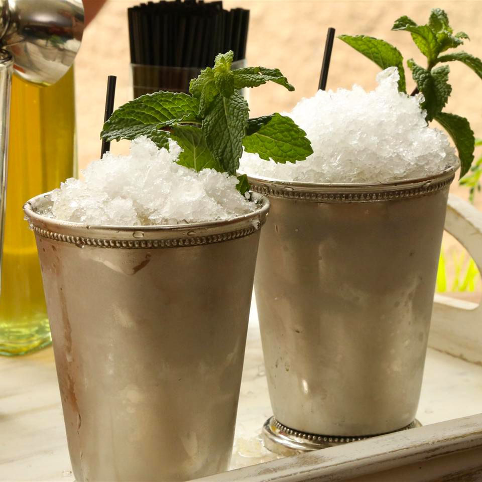

Mint Juleps

Description
The proper way to serve a mint julep is in a frozen silver goblet, but if you don't have one,
just use the most elegant glass you have. Serve the cocktails on a silver platter with short straws.
You can make the simple syrup ahead of time and store it in the refrigerator.
Ingredients
Mint Simple Syrup:
- 2 cups water
- 2 cups white sugar
- 1/2 cup rougly chopped fresh mint leaves
Cocktails
- 8 cups crushed ice, or as needed
- 32 fluid ounces Kentucky bourbon
- 8 sprigs fresh mint for garnish
Steps
- Make the simple syrup: Bring water, sugar, and chopped min to a boil over high heat
in a small saucepan. Cook, stirring occasionally, until sugar is completely dissolved, 1
to 2 minutes. Remove from the heat and let cool for 1 hour. Pour syrup through a strainer
to remove mint leaves.
- Make the cocktails: Fill eight glasses with crushed ice; pour 4 ounces bourbon and 1/4
cup mint syrup into each cup. (Add extra syrup for anyone with a sweet tooth.) Top each drink with a mint sprig.